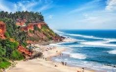
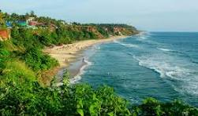

Beaches of Kerala
Kerala is blessed with some of the most beautiful beaches in India, featuring golden sands, peaceful waves, and breathtaking sunsets. These beaches provide the perfect setting for relaxation, photography, and water activities.

Kovalam Beach is one of the most visited beaches in Kerala, known for its iconic lighthouse and crescent-shaped shoreline. Varkala Beach is famous for its dramatic cliffs and serene atmosphere, making it a favorite among travelers seeking peace and natural beauty.

Whether you're looking for adventure, relaxation, or simply the joy of watching the sunset, Kerala’s beaches offer an unforgettable experience.